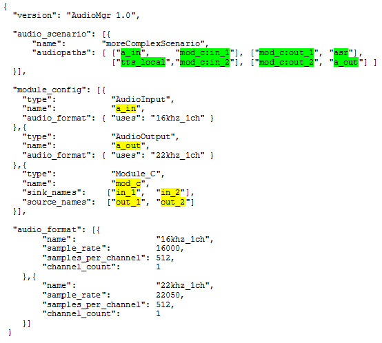

Overview
The general logging capabilities of the Cerence SDK are described in the General Logging chapter of the Common User’s Guide. In this chapter is dedicated to the audio logging capabilities of the SDK’s audio framework components.
The audio framework provides the possibility of audio data logging and audio data timing analysis at dedicated logging points. Both may be requested by Nuance to analyze audio issues.
Audio Data Logging
Overview
To analyze audio issues it may be necessary to check the audio data stream passing the SDK’s audio framework components. Therefore several logging points are provided that allow to log the audio data by usage of the SDK’s logging system.
All audio modules provide audio data logging at dedicated logging points. In general there are three different types of audio data logging points:
- Pad logging point: All audio modules have so called pads that are used to connect a module to another module in an audio scenario in order to stream audio data. All these connection pads provide the possibility to log the audio data that passes.
- Internal logging point: Some audio modules have module internal logging points that denote important processing points within an audio module worth to have the possibility to log audio data. For instance, a Prompter audio module that encapsulates a Vocalizer text-to-speech synthesis core engine possesses an internal logging point. This allows to log the audio data that is delivered from this core engine before any further processing within the Prompter audio module takes place.
- External logging point: Some audio modules have external logging points that denote transition points from a SDK external implementation to an audio module. For instance, an Audio Input audio module uses an external audio adapter implementation to receive audio data from an external source (e.g. audio device). This audio data delivered from the external adapter implementation can be logged with activating the specific external logging point.
Which logging point type is supported from which audio module can be seen in the survey given in Audio Data Logging Points.
{kind=link}
Audio data logging points of any type can be activated in the logger JSON configuration. For more details see Activation Of An Audio Data Logging Point.
Audio Data Logging Points
Synoptic Table
The following table gives a brief overview of all audio modules and their available audio data logging points. For more details to a specific
module see the linked user’s guide documents in the Audio Module column. A guidance how to obtain the InstanceName and PadName of the
logging point name can be found in the Finding Instance And Pad Names chapter.
| Audio Module | Logging Point Naming Schema | Logging Point Type |
|---|---|---|
| Asr | nuance.audio.SinkPad.<InstanceName>:<PadName> | Input pad logging point. |
| nuance.audio.SourcePad.<InstanceName>:<PadName> | Output pad logging point. | |
| Audio Buffer | nuance.audio.SinkPad.<InstanceName>:<PadName> | Input pad logging point. |
| nuance.audio.SourcePad.<InstanceName>:<PadName> | Output pad logging point. | |
| Audio Decoder | nuance.audio.SinkPad.<InstanceName>:<PadName> | Input pad logging point. |
| nuance.audio.SourcePad.<InstanceName>:<PadName> | Output pad logging point. | |
| Audio Encoder | nuance.audio.SinkPad.<InstanceName>:<PadName> | Input pad logging point. |
| nuance.audio.SourcePad.<InstanceName>:<PadName> | Output pad logging point. | |
| Audio From File | nuance.audio.SourcePad.<InstanceName>:<PadName> | Output pad logging point. |
| Audio Input | nuance.audio.AudioInput.<InstanceName> | External logging point on delivery from external audio adapter. |
| nuance.audio.SourcePad.<InstanceName>:<PadName> | Output pad logging point. | |
| Audio Output | nuance.audio.SinkPad.<InstanceName>:<PadName> | Input pad logging point. |
| nuance.audio.AudioOutput.<InstanceName> | External logging point on delivery to external audio adapter. | |
| Audio Stream Distributor | nuance.audio.SinkPad.<InstanceName>:<PadName> | Input pad logging point. |
| nuance.audio.SourcePad.<InstanceName>:<PadName> | Output pad logging point. | |
| Audio To File | nuance.audio.SinkPad.<InstanceName>:<PadName> | Input pad logging point. |
| Cloud Commander | nuance.audio.SinkPad.<InstanceName>:<PadName> | Input pad logging point. |
| Prompter | nuance.audio.SourcePad.<InstanceName>:<PadName> | Output pad logging point. |
| nuance.prompter.Vocalizer.<InstanceName> | Internal logging point on delivery of Vocalizer core engine. | |
| Sample Rate Converter | nuance.audio.SinkPad.<InstanceName>:<PadName> | Input pad logging point. |
| nuance.audio.SourcePad.<InstanceName>:<PadName> | Output pad logging point. | |
| Speech Signal Enhancement | nuance.audio.SinkPad.<InstanceName>:<PadName> | Input pad logging point. |
| nuance.audio.SourcePad.<InstanceName>:<PadName> | Output pad logging point. |
Finding Instance And Pad Names
This section shall serve as a guide how to find the correct InstanceName and PadName that is required to activate a specific audio data logging point.
Instance Names
In case an audio module is created explicitly the instance name that was given to the create function has to be used as InstanceName of the logging point. Otherwise, in case the audio module is implicitly created the correct instance name can be obtained from the corresponding audio module instance’s JSON configuration. The instance names of the audio modules can be also obtained from the corresponding audio scenario definition. For more details to explicit and implicit creation of audio modules see Audio Module Creation and Destruction in the Audio User`s Guide.
Pad Names
The PadName of a logging point is optionally in case the specific audio module have only one input and/or output pad. This is as then the input and/or output pad name corresponds to the instance name of the audio module. Otherwise, when an audio module have more than one input and/or output the pad names are defined in the module’s JSON configuration.
Example
Having a look at the SDK’s prompting example.
The audio configuration coming with it looks as follows:
1 2 3 4 5 6 7 8 9 10 11 12 13 14 15 16 17 18 19 20 | {
"version": "AudioMgr 1.0",
"audio_scenario": [{
"name": "simplePromptingScenario",
"audiopaths": [ ["prompter", "loudspeaker"] ]
}],
"module_config": [{
"type": "AudioOutput",
"name": "loudspeaker",
"audio_format": { "uses": "22khz_1ch" }
}],
"audio_format": [{
"name": "22khz_1ch",
"sample_rate": 22050,
"samples_per_channel": 512,
"channel_count": 1
}]
}
|
The logger.json extended with the audio data logging point for the Audio Output audio module instance named loudspeaker looks as follows:
1 2 3 4 5 6 7 8 9 10 11 12 13 14 15 16 17 18 19 20 21 | {
"version": "Common 1.0",
"logger": {
"text_buffer_entries": 1000000,
"data_buffer_size_per_channel":500000,
"consumers": [{
"name": "stdout Logger",
"output": "stdout",
"modules": "",
"not_modules": "",
"zones": "LOG_FATAL|LOG_ERROR|LOG_WARNING|LOG_CORE_INFO|LOG_EXTERNAL_FUNC"
},
{
"name": "loudspeaker_audio_output_data",
"output": "loudspeaker_audio_output_data_%DATE_TIME%.pcm",
"modules": "nuance.audio.AudioOutput.loudspeaker",
"zones": "LOG_DATA"
}
]
}
}
|
Via Audioconfig.json
The following audio JSON configuration shows the audio module instance and pad names in the audio scenario definition that needs to be used for the audio data logging points marked in green. The yellow marked show where the instance and pad names of the implicitly started audio modules come from:
{kind=link}
Usage
Activation Of An Audio Data Logging Point
An audio data logging point can be activated in the logging system’s JSON configuration by defining a corresponding logging consumer configuration. Usually a file logging consumer is used to write the audio data to a file. So this section describes the activation of an audio data logging point by the usage of a file logging consumer.
To set up a file logging consumer that takes delivery of a specific audio data logging point, the logging point’s name has to be set
as single logging module to the modules parameter. The names of all available logging points can be seen in the survey given in
Audio Data Logging Points. For instance, to set the output pad logging point of an Audio Input module instance named microphone
the following modules configuration would be necessary:
"modules": "nuance.audio.SourcePad.microphone",
The logging zones parameter zones has to be set to the single logging zone LOG_DATA to activate the data logging for this
consumer in general:
"zones": "LOG_DATA",
For all other file logging consumer configuration parameters see the General Logging chapter of the Common User’s Guide.
Note
When activating audio data logging points the following should be noted:
- Text and data logging may in principle not logged via one single logging consumer. So for text logging and data logging seperate logging consumers needs to be configured.
- Only one audio data logging point may be activated per logging consumer. So for each audio data logging point that needs to be activated an own logging consumer must be configured.
- It is not recommended to activate too much audio data logging points in parallel. Data logging requires additional resources in the terms of CPU, I/O and disk space. Therefore only the logging points really needed should be activated. In the most cases 1-3 logging points in parallel are sufficient.
- The logging system JSON configuration parameter
data_buffer_size_per_channelshould be set to a quite high value (e.g. 500000). This is recommended for audio data to avoid buffer overruns.
Example
The following example shows how to activate the external and the output pad logging point of an Audio Input audio module instance
named microphone. For each activated logging point an own file logging consumer is configured that takes delivery of a specific audio
data logging point and that writes the received data in a separate file.
Please be aware that the name config parameter needs to be unique for each log consumer.
1 2 3 4 5 6 7 8 9 10 11 12 13 14 15 16 17 18 | {
"version": "Common 1.0",
"logger": {
"data_buffer_size_per_channel":500000,
"consumers": [
{
"name": "audio_input_external_logging_point",
"output": "audio_input_external_logging_point_%DATE_TIME%.pcm",
"modules": "nuance.audio.AudioInput.microphone",
"zones": "LOG_DATA"
}, {
"name": "audio_input_output_pad_logging_point",
"output": "audio_input_output_pad_logging_point_%DATE_TIME%.pcm",
"modules": "nuance.audio.SourcePad.microphone",
"zones": "LOG_DATA"
} ]
}
}
|
Starting And Stopping Of Audio Data Logging
In case an audio data logging point was activated according to Activation Of An Audio Data Logging Point, data is logged in general whenever audio data passes the activated logging point at application runtime.
In general audio data are sent in the audio framework as so called audio streams. An audio stream describes for instance a single audio prompt played out via the Prompter audio module and consists of 1 to n audio packets containing the audio data. Each audio stream is identified by a begin-of-stream (BOS) and an end-of-stream (EOS) indication. So the very first audio packet contains a BOS indication and the very last an EOS indication.
An activated logging point starts the logging of audio data with receiving the BOS audio packet and stops it with the EOS audio packet.
This means for a file logging consumer that takes delivery of this data that a logging file always contains only one single stream
(e.g. one single prompt). In case a new stream is started it depends on the file logging consumer’s configuration if either the existing
logging file is overwritten or a new logging file with date and time in its name is created. The existing logging file is overwritten when
the file consumer configuration contains a static file name defined with parameter output, e.g.:
"output": "static_file_name.pcm",
Whereas a new logging file is created with each logged audio stream when the output parameter contains the %DATE_TIME% placeholder
in the file name, e.g.:
"output": "dynamic_file_name_%DATE_TIME%.pcm",
Note
Defining a static file name in the output JSON configuration of a file logging consumer leads to an overwrite of the
existing logging file for each new audio stream. Whereas the usage of a dynamic file name with the %DATE_TIME% placeholder
creates a new file for each stream which can lead to a high disk space consumption.
To sum up, the starting and stopping of audio data logging is controlled by audio streams that are sent through activated logging points.
When a stream is sent depends on the audio modules that are connected in an audio scenario. For instance in a playback path containing
a Prompter and an Audio Output audio module a stream is sent with each prompt that is played out with a call to the
nuance_prompter_IPrompter_playString API function, e.g.:
...
/* play a text prompt -> the very first audio package that is sent by the 'Prompter' audio
module starts the audio data logging of an activated logging point in this module chain */
nuance_prompter_IPrompter_playString(prompter, "Hello", promptListener, &prompt);
/* wait for completion of playback -> the very last audio package that is sent by the 'Prompter'
audio module stops the audio data logging of an activated logging point in this module chain,
which means for a file logging consumer to close the logging file after writing this last audio
data package */
nuance_prompter_IPrompt_waitForCompletion(prompt, &status);
...
Whereas in a capture path containing for instance an Audio Input and an Asr audio module a stream is
started with a call to nuance_asr_IRecognizer_start and stopped with a call to nuance_asr_IRecognition_stop API
function, e.g.:
...
/* start a speech recognizer -> the very first audio package that is sent by the 'Audio Input' audio
module starts the audio data logging of an activated logging point in this module chain */
nuance_asr_IRecognizer_start(recognizer, useCase, recogListener, &recognition);
/* perform one or more recognitions */
/* stop the speech recognizer -> the very last audio package that is sent by the 'Audio Input'
audio module stops the audio data logging of an activated logging point in this module chain,
which means for a file logging consumer to close the logging file after writing this last audio
data package */
nuance_asr_IRecognition_stop(recognizer);
...
Note
The Asr audio module implements a continuous recognition concept where an endless recognition is performed and in-between results can be requested. So audio data logging in a capture path containing an Asr can lead to huge disk space consumption due to the audio data logging depending on the length the continuous recognition is active.
Data Format
Audio data is logged as raw PCM data or raw encoded data. That means that no headers are attached.
This chapter describes how to deal with files containing the logged audio data, how the files can be opened and played.
PCM
The SDK uses signed 16bit PCM sample values only.
To import a plain PCM file, for example in the commonly used tool audacity, do the following steps:
- go to File –> Import –> Raw Data
- select the file
- select “Signed 16-bit_PCM”
- select “Little-endian”
- select the amount of channels contained in the file (e.g. 1)
- leave start offset at 0 bytes
- leave amount to import at 100 %
- select the sample rate contained in the file (e.g. 22050)
To ease handling, a wav header can easily be added to a PCM file using the tool SoX(Sound eXchange). For example: a 22050Hz log file with 1 channel needs the following parameters:
sox --no-dither -c 1 -r 22050 -b 16 -t raw -e signed-integer logged_data.pcm logged_data.wav
Importing the wav file into audacity is more convenient now and requires the following steps:
- go to File –> Import –> Audio
- select the file
ENCODED
OGG Opus
OGG-Opus encoded files can be imported directly, for example in the commonly used tool audacity.
The official file suffix for OGG-Opus encoded files is opus.
The tool audacity requires the activation of the FFmpeg library to import those files.
- go to Edit –> Preferences –> Libraries
Please be aware that FFmpeg, used by audacity, decodes all OGG-Opus files to a sample rate of 48000Hz.
To fully inspect an OGG-Opus file there are other tools, for instance the tool opusinfo, which prints out the full information including the sampling rate.
Plain Opus
Those files can not be read with public tools like audacity.
In general it is not recommendet to use plain Opus at all.
Audio Data Timing Analysis Logging
Overview
To analyze audio issues it may be necessary to check the timing, indicating when the audio data is passing the SDK’s audio framework components. Therefore several logging points are provided that allow to log the timing information by usage of the SDK’s logging system.
For the timing analysis logging points the same rules for logging point types, finding names and usage apply as for the audio data logging points. Therefore please have a look at chapter Audio Data Logging for this information.
Usage
Activation Of A Timing Analysis Logging
The activation of a timing analyis logging is almost identical to the Activation Of An Audio Data Logging Point.
The only difference is that the logging config parameter zones has to be set to the logging zone LOG_TIMING_ANALYSIS
to activate the timing logging for this consumer in general:
"zones": "LOG_TIMING_ANALYSIS",
Example
The following example shows how to activate the timing analysis logging of an Audio Output audio module instance
named loudspeaker.
1 2 3 4 5 6 7 8 9 10 11 12 13 | {
"version": "Common 1.0",
"logger": {
"data_buffer_size_per_channel":500000,
"consumers": [
{
"name": "loudspeaker_audio_output_timing",
"output": "loudspeaker_audio_output_timing_%DATE_TIME%.log",
"modules": "nuance.audio.AudioOutput.loudspeaker",
"zones": "LOG_TIMING_ANALYSIS"
} ]
}
}
|
The following example shows how to activate the timing analysis together with audio data logging of an Audio Output audio module instance
named loudspeaker creating two dedicated files.
Please be aware that the name config parameter needs to be unique for each log consumer.
1 2 3 4 5 6 7 8 9 10 11 12 13 14 15 16 17 18 19 | {
"version": "Common 1.0",
"logger": {
"data_buffer_size_per_channel":500000,
"consumers": [
{
"name": "loudspeaker_audio_output_timing",
"output": "loudspeaker_audio_output_timing_%DATE_TIME%.log",
"modules": "nuance.audio.AudioOutput.loudspeaker",
"zones": "LOG_TIMING_ANALYSIS"
},
{
"name": "loudspeaker_audio_output_data",
"output": "loudspeaker_audio_output_data_%DATE_TIME%.pcm",
"modules": "nuance.audio.AudioOutput.loudspeaker",
"zones": "LOG_DATA"
} ]
}
}
|
Starting And Stopping Of Timing Analysis Logging
In case timing analysis logging was activated according to Activation Of A Timing Analysis Logging, timing information is logged in general whenever audio data passes the activated logging point.
Activating the external timing analysis logging of the AudioInput or the AudioOutput will write a log message before and after each call to an audio adapter API function and in turn when an audio adapter calls a listener function implemented by the AudioInput respectively AudioOutput.
The main focus of this adapter analysis is to prove that especially externally developed audio adapter implementations fulfill the severe requirement of short running function implementations. In case this requirement is not properly fulfilled by an adapter implementation the performance of other audio modules (e.g. SpeechSignalEnhancement, SampleRateConverter, ..) may be influenced in a negative way.
To log timing information it is required that audio data is being captured and/or played, for more details please have a look at Starting And Stopping Of Audio Data Logging.